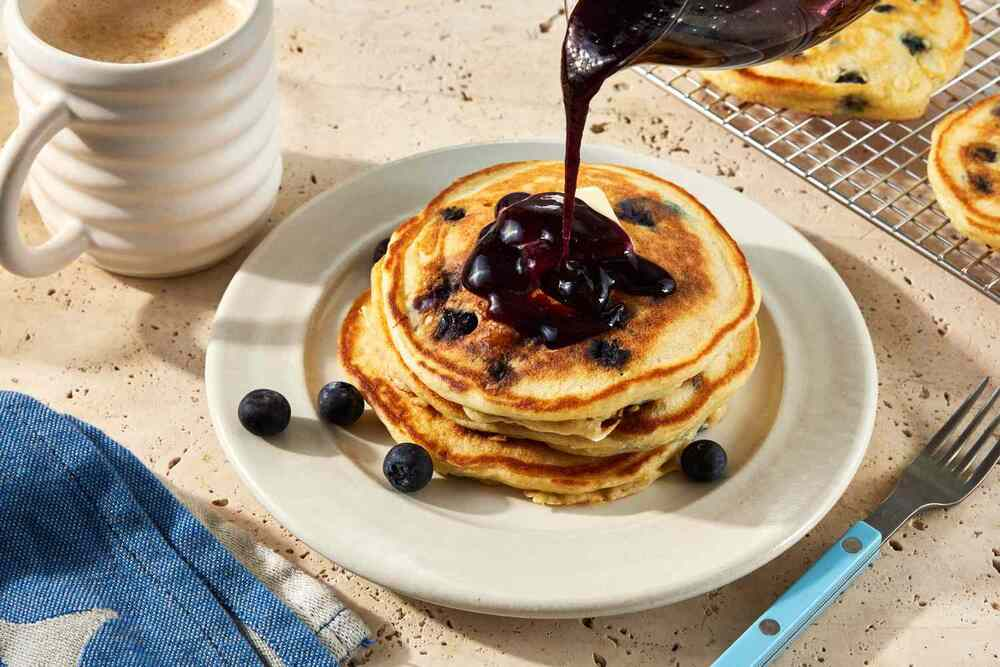

Pancake

Description:
Fluffy pancakes are a classic breakfast favorite, loved
for their soft, airy texture and slightly sweet flavor.
Perfect for weekend mornings or brunch, they’re simple to make
and endlessly
Perfect for weekend mornings or brunch
The secret to light and fluffy pancakes is
not over mixing the batter and letting it rest for a few
minutes before cooking.
With just a handful of basic ingredients—flour, eggs, milk, and
baking powder—you can create a delicious stack of pancakes in under 30
minutes.
Ingredients:
- 1 1/2 cups all-purpose flour
- 3 1/2 tsp baking powder
- 1 tsp salt
- 1 tbsp sugar
- 1 1/4 cups milk
- 1 egg
- 3 tbsp unsalted butter, melted
- 1 tsp vanilla extract
-
Optional toppings: maple syrup, fresh fruit, whipped
cream
Steps:
-
In a large bowl,
whisk together the flour, baking powder, salt, and sugar.
-
In another bowl, beat the egg and
then whisk in the milk, melted butter, and vanilla extract.
-
Pour the wet ingredients into the dry ingredients and stir gently until
just combined. Do not over mix; a few lumps are okay.
-
Heat a non-stick skillet or griddle over medium heat and lightly grease
it with butter or cooking spray.
-
Pour 1/4 cup of batter onto the skillet for each pancake. Cook until
bubbles form on the surface, about 2 to 3 minutes.
-
Flip the pancake and cook for another 1–2 minutes until
golden brown and cooked through.
- Repeat with the remaining batter, greasing the skillet as needed.
-
Serve hot
with your favorite toppings like maple syrup, fresh fruit, or whipped
cream.
Home